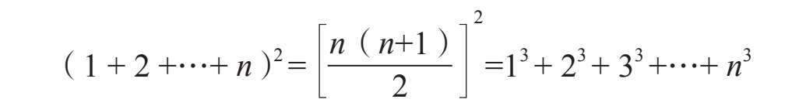

斯人斯事
我第一次听说毕达哥拉斯的大名，是在小学四年级的数学社团，那个社团里的孩子都喜好花时间在形形色色的几何图形和古古怪怪的数字谜题之中学习和嬉戏。我喜欢读这个名字时音节在舌尖弹跳而出：毕—达—哥—拉—斯。电光石火之间，我猛然惊醒这不凡之名必配不凡之人。千真万确！许许多多人认为毕达哥拉斯（公元前约570-公元前约495）是苏格拉底之前最有魅力的哲学家。“历史之父”希罗多德（公元前约484-公元前约425）已然指出毕达哥拉斯是古希腊最伟大的哲学家之一。甚至连骄横傲世的赫拉克利特（公元前约535-公元前约475），虽然坚称世人皆愚（他独聪），也承认毕达哥拉斯的学识在他之上。
毕达哥拉斯的生平已难考，主要是因为关于他的种种传闻都是写于其死后多年。毕达哥拉斯本人即使写过也不多。然而，《名哲言行录》的作者第欧根尼·拉尔修[1]提到了毕达哥拉斯的3本著作：《论教育》《论国家》《论自然》。但是孤证不立，许多历史学家断言这些并非毕达哥拉斯的著作。
顺便说一下，还有许多圣贤是不动笔写作的，比如苏格拉底。柏拉图为苏格拉底写了对话录，可惜没人为毕达哥拉斯记言。
我特别欣赏毕达哥拉斯的两本传记，一本的作者是新柏拉图派哲学家、数学家波菲利（约234-约305），另一本的就是第欧根尼·拉尔修。这两本传记天马行空、充满矛盾，尤其引人入胜，令人遐想。
毕达哥拉斯身负许多传说。有人坚信他是太阳神阿波罗之子，有记载他在同一时刻现身于四个不同的地方。（但是，第欧根尼在描述毕达哥拉斯生平的结尾时爆料说，其实有四个人都叫毕达哥拉斯，那么同一时刻能在四个不同的地方观察到“毕达哥拉斯”就不足为奇了。）有人发誓说毕达哥拉斯身高两米五。有人声称毕达哥拉斯拳法精湛从无败绩。拳赛前后，他弹起里拉琴，吟唱荷马与赫西俄德的诗句以娱情，甚至有人声称毕达哥拉斯的咏唱可以治病疗伤。请注意，波菲利与第欧根尼都详细记述过同一轶事：有一天，毕达哥拉斯沿河漫步，河水也欢呼致意：“您好，毕达哥拉斯……”
现在，我们关注毕达哥拉斯是多么“谦逊”。
有神，有人，有毕达哥拉斯。
——毕达哥拉斯[2]
据第欧根尼·拉尔修（假定我们相信他）所言，毕达哥拉斯对于给他的神秘形象添砖加瓦不遗余力。比如：他乐于回顾自己的“生生世世”，瞬间就能回忆得纤毫毕现；他回顾自己身为戟兵参加特洛伊战争。他也有许多不那么戏剧性的回忆，比如他曾经是一个成功的商人，一个国王的朝臣，一只动物，甚至是一片树叶。毕达哥拉斯是怎样知晓这一切的呢？据毕达哥拉斯所言，原来他曾遇到希腊神使赫尔墨斯，神使大为感动，允诺他除了不朽以外要什么礼物都可以。毕达哥拉斯要了生生世世永志不忘的能力。神使如他所愿！
神论哲学家、诗人色诺芬（公元前约570-公元前约475）曾讲过，毕达哥拉斯见人打狗，大力劝止——因为友人刚刚去世，灵魂寄于狗中。（希望那人乖乖听从了，因为传说中毕达哥拉斯可是个厉害的拳手。）
毕达哥拉斯乐于戏谑。他曾经消失了好长一段时间，再次现身城中时瘦骨嶙峋。他逢人便说自己去了死人国度，但他的故事里不但有他在死人国里的见闻，也有他不在时现实世界发生的真事。那他是怎么知道的？答案很简单：他藏身在老母亲家里啦，还极度减肥。老母亲告诉他时事新闻，他再对死人国的事信口开河——当然，说什么都可以，谁又会刨根问底呢？
虽然有以上种种传说，但是关于毕达哥拉斯，仍然有些事实无可争辩。
公元前570年左右，毕达哥拉斯生于萨摩斯岛。在40岁那年，他去往意大利南部的克罗顿，建立了毕达哥拉斯学派。该学派的结构分成政治、学术、宗教3支，传说信众最多达到300人。
后世的一些传记夸大了毕达哥拉斯在克罗顿的影响。这些故事里说毕达哥拉斯引导市民远离堕落，把他们转化得清心寡欲、亲如兄弟、求知、乐道。毕达哥拉斯雄辩滔滔，为人敬仰，但是他经常垂帘演讲，无人能睹其颜。（这更增加了他的神秘感，我准备对我的学生也这样做。）
毕达哥拉斯前往克罗顿之前，还曾为寻求基础知识而游学。他曾游历埃及、腓尼基（大致位于今天的叙利亚和黎巴嫩境内）、波斯帝国（今巴勒斯坦与以色列以及巴比伦）等地。埃及人教几何，腓尼基人传算术，迦勒底人授天文，此外马加人——也就是琐罗亚斯德人，传授他宗教奥义与养生秘诀。他甚至旅行到印度。但是，他曾拜见了什么样的哲人，探得怎样的智慧之骊珠，这一切仍是谜团。
毕达哥拉斯之死也有许多版本，大多数相当离奇。我告诉你一个最平凡的版本吧：毕达哥拉斯在90岁寿终正寝。
音律与数字
毕达哥拉斯与门徒探索宇宙法则的同时也研究音乐。你一定回想起来了，毕达哥拉斯爱好弹里拉琴，咏唱荷马和赫西俄德的诗歌（古希腊名著）。毕达哥拉斯相信音乐能动人心魄，升华感情（如果不信，请阅读列夫·托尔斯泰的《克鲁采奏鸣曲》）。毕达哥拉斯学派受毕达哥拉斯发现音律与数字的关系影响很深，这点我们都很清楚了。音律基于数字表现在方方面面，例如，毕达哥拉斯发现若两根琴弦的音高恰好差一个8度（比如C到），那么这两根琴弦的弦长之比是1:2；若两根弦的音高差5度（比如C到G），则弦长之比是2:3；若弦的音高差4度（C到F），则弦长之比是3:4。
音乐愉悦人心，妙在历历可数又不知其可数。
——戈特弗里德·莱布尼茨
毕达哥拉斯发现音乐可以用数字来表达，这对于他得出惊人的理论是重要的一步。他的理论是，世界完完全全建立在数字之上，无论以什么形式。事实上，亚里士多德在他的著作《形而上学》中指出：毕达哥拉斯是研究数学并认为数学理论是万物之理的第一人。
什么科学理论能保证科学理论的存在性呢？
——马丁·加德纳
数学也是视觉艺术之源。望远镜是基于几何和比例的：呈现在二维表面上物体的尺寸随与观察者距离的增大按比例缩小，而构图又是基于几何形状的。
几何学是万图之源。
——阿尔布雷特·丢勒
更进一步，毕达哥拉斯还用几何语言定义好坏正误。例如，对于“好”和“坏”，他用的术语是“直”和“曲”（当然是用的希腊文）。我们至今仍用“为官不正直”来指受贿。（译者注：原文是“弯曲的政治家”。但是中文里的“曲意逢迎”之类多是指下对上，行为主体是行贿方，这里的受贿方就不说“曲”而说“不正直”了。）直线是恰当的，曲线是不当的。遵循他的思路我们就能理解“正直之人”的说法了。（虽说一个人的姿态与品德没有什么联系。）
良缘之始——亲和数
亚里士多德曾经说过挚友是异体同心。但是毕达哥拉斯又是怎样定义友情的呢？请看下文，会有惊喜。
新柏拉图主义的学者伊安布利霍斯（约245-约325）也曾为毕达哥拉斯作传。据他描述，毕达哥拉斯学派用数字284和220来定义友情。
什么意思？！什么缘故？！
请把220的因数（能整除220的数）全加起来，再把284的因数全加起来，就能明白原因了。（这里说的因数不包括数字自身。）
220的因数是1、2、4、5、10、11、20、22、44、55和110，它们的和是284。
284的因数是1、2、4、71和142，它们的和是220！
根据毕达哥拉斯学派的理论，一对数字，如果其中一个的因数之和正好是另一个，就说它们犹如良缘一样。在数学上，我们称之为一对“亲和数”。
我们可以在计算机的协助下判断亲和数。除了（220与284）以外，亲和数对还有（1184与1210）、（2620与2924）、（5020与5564）和（6232与6368）。10000以内的亲和数对就只有这5对。如果你很无聊的话，就试试验证它们是否是亲和数吧。换言之，把每个数的因数（不包括它本身）全加起来，看看是否等于另一个。
乐意的话，你还可以做点更有挑战性的事——找找其他亲和数对。这时你大概要用到计算机了，但是别忘了，在1636年法国数学狂人皮埃尔·费马发现了17296与18416是一对亲和数，两年过后，鼎鼎大名的法国哲学家、数学家勒内·笛卡儿发现了亲和数对（9363584与9437056）。
笛卡儿，无穷与上帝
笛卡儿被“无穷”这个概念深深触动，在他的著作《第一哲学沉思集》里，他甚至以无穷的概念“证明”了上帝的存在。他的证明如下。
我身为有涯之生，不能造无穷之概念。唯有无穷之神，能容无穷之思。故而唯上帝能造无穷之概念。我可以领会无穷之神意，而上帝又是神意的唯一创造者——因此证明了上帝存在！
在17世纪可没有计算机，更不用说互联网和社交网络了。如此说来，费马和笛卡儿的成就更惊人了。他们是怎样发现这些大亲和数对的呢？请看下文。
有些研究数学史的学者说笛卡儿提出的那对亲和数并非是他自己找出来的，而是来自16世纪的伊朗数学家穆罕默德·巴基尔·雅兹迪！众所周知，阿拉伯数学家在西方数学家提出之前就已经熟知许多亲和数了。
事实上，上溯到9世纪，伊拉克数学家、天文学家、物理学家塔比·伊本·库拉[3]（826-901）就给出了形成亲和数对的充分条件[4]。数百年后，笛卡儿与费马挖出了这个公式并当作自己的“发现”。
有意思的是，第二小的亲和数对（1184和1210）直到1866年才被发现。发现者是意大利少年B.尼科洛·帕格尼尼（这里说的并不是那位大名鼎鼎的小提琴家和作曲家）！毕达哥拉斯以后的数学家怎么都错过了这对可爱的数呢，谁也不知道。原因之一可能是塔比·伊本·库拉的条件对这对并不适用。另一个可能的原因是“无心插柳柳成荫”。
到2007年，人们已经发现了近12000000对亲和数。无论如何，我们是生活在一个亲和的世界里哦。
数有雌雄
对于数字的其他特征，毕达哥拉斯确信数有雌雄之分。例如，奇数可以看作雌数，偶数则为雄数。请注意，迄今发现的几乎所有亲和数都是雄数（偶数）。
显然这引出一个疑问：有雌的亲和数吗？其实是有的。这有一些例子：（11285与14595）、（67095与71145）和（522405与525915）。
这又引出一个疑问：“雌”“雄”数之间能有“情谊”吗？换言之，一个奇数与一个偶数的因数之和等于对方，这可能吗？
到这本书的时候，这个问题无人能答。一方面，没人发现过这样的数对；另一方面，也没人证明不可能有这样的数对。
这里我暂且先不讨论毕达哥拉斯（本章里还会回到有关他的话题），因为我从数字的“情谊”想到了关于数字的一些其他拟人属性，想讲一些有趣的内容。
水仙花数（水仙花在西方比喻自恋之人）
我与自己很难共通。
——弗兰兹·卡夫卡
我确信有些人是和自己相得无间的。我们不妨用毕达哥拉斯的思路看看，数字中有没有这样的情况：某个数，它的真因数[5]之和等于它本身？
有这个属性的数叫作“完全数”。6和28这两个完全数立刻浮现在我的脑海（嗯，当然也略加思索）。我稍停片刻，让我聪明的读者们可以确认6和28的的确确是完全数。
答：1+2+3=6，1+2+4+7+14=28
关于数字6，希波的圣奥古斯丁（354-430）在他的著作《上帝之城》里写道：“6是个完全数。并非因为上帝需要用6天才使得万物完美无缺；而是因为6完美无缺，上帝才在6天内造物。”
28之后的完全数是496，然后是8128。俄国作家列夫·托尔斯泰喜欢自夸他出生在“近似完美”的1828年。假如他生在6月28日，那他就更得自鸣得意了（更不用说6.28还近似2π）。
你可能注意到这个趋势了：6，28，496，8128，…，喜欢提出假设的人会冒险预言：完全数的尾数在6与8之间交替。
但是，这个假设不成立。第五个完全数是33550336，符合这个模式；然而，第六个完全数8589869056的结尾依然是6，打破了这个模式。或许我们可以把假设稍加修改，变成完全数结尾是6或者8。
我们观察前9个完全数：
6
28
496
8128
33550336
8589869056
137438691328
2305843008139952128
2658455991569831744654692615953842176
最后一个有37位。（是的，它的因数之和等于它本身！）
第10个完全数有54位；第11个有65位，尾数是8128，恰好就是第四个完全数。另外，人们还找到了有一百万位的完全数。你可以自己任意提一些假设。
学有余力的学生的进一步思考
求证所有偶完全数的尾数都是6或者8。看看下面的内容会对你有帮助。
6=1+2+3
28=1+2+3+4+5+6+7=13+33
496=1+2+3+4+…+31=13+33+53+73
8128=1+2+3+4+…+127=13+33+53+…+153
法国数学家爱德华·卢卡斯（1842-1891）甚至证明了偶完全数的尾数一定是16、28、36、56、76或96，他是怎么做到的？这可不容易！
到此，我们见过的完全数只有偶数，自然会发问：有没有完全数是奇数？
19世纪末，英国数学家詹姆斯·西尔维斯特写道：奇完全数的发现一定是个奇迹。时至今日，大多数数学家倾向于相信答案为“无”。尽管如此，无人能证。这也是个“开放式问题”，解答出它将是你扬名立万的机会！
还有个有趣的未解之谜是，完全数是不是有无穷个？无论我们沿着自然数跑多远，是否总有更大的完全数？或者，有个最大的完全数？
这个问题也是开放的，而且肯定与后文所述的梅森数相关。
数有多重？肥数、瘦数、完美数
身处减肥时代，我们可以把自然数分成3类——完美的完全数、“肥”数和“瘦”数。“肥”数的因数之和大于它本身，“瘦”数的因数之和（我想你能猜到……）小于它本身。例如，12是个胖乎乎的数，因为它的因数（1，2，3，4和6）之和是16；反之，10就很苗条，因为1+2+5=8。
那么雌数怎么样？也就是说，奇数呢？它们也会肥胖吗？有没有因数之和大于它本身的奇数？如果我们稍加试验，就会发现奇数的因数之和全都小于它本身。（请拿几个数试试看。）如果你尝试的数都不超过900，或许你就会相信奇数全都不肥。可是，别上当呀！
用有限个数来检查，无论有多少个，都不能排除例外。事实上，奇数还真有肥的，945的因数之和是975。这样，我们就发现了最小的肥奇数945。虽然如此，肥奇数还是挺少见的。
在本书的后文里，我们还会回到完全数的话题。
有趣人与无趣人，无趣数与有趣数
通常的“终极名单”往往以悖论告终：定义的存在性与定义内容本身相斥。这是什么意思呢？
假设我们要准备两份名单：一份的内容是世界上全部的有趣人的名字，按照人们对他们的兴趣排序；其他人都在另一份名单上，按照从世上最无趣到“一般”无趣来排序。
以下是位于两份名单前列的人：
有趣人：毕达哥拉斯、达·芬奇、克里奥佩特拉、莫扎特、爱因斯坦、玛丽莲·梦露、苏格拉底、梅萨利纳、拜伦、拿破仑、佛陀、贞德、亚历山大大帝……
无趣人：雷金纳德·冯·哈欠、布伦希尔达·嗜睡、雅各布·催眠、弗拉基米尔·午觉、比尔·无聊、尼尔斯·麻木、伯尼·空谈、凯·昏、哈利·凡、蒂姆·呆……
然而事实并不如此。以雷金纳德·冯·哈欠为例，他在我们的名单上位列世界上最无趣的人第一位，这个事实就挺有趣的。（我的意思是：他是世界之最！）因此我们得把他的名字移到有趣人的名单里，当然他不可能名列前茅，但是他还是要上榜的，或许位置还很令人仰望呢。
现在我们再来看看。既然雷金纳德出榜了，布伦希尔达·嗜睡就成了世上最无趣的人。但是这就让她变得有了点趣味了，意味着她也得被移到第一个名单里去。如果我们继续这样操作，最后就别无选择了，只能说世上没有，从来没有过无趣的人。（我确信你早就发现这番阐述里的谬误了。）
在数学世界里，对于无趣人悖论有个流行的版本：无法在1000个单词以内描述的自然数集合。我们注意到词汇的数量是有限的（第十二版牛津英语词典里有171476个单词），而我们要求的词数是有限的（1000），所以这种数也是有限的。尽管如此，1000个词描述不了的自然数里有个最小的数。我们把它记作n，并且定义为“一千字道不尽的最小自然数”。
不好了！我们用12个字就（请检查一下）描述了n，因此n就进入了1000字可以描述的名单，违反了它自己的定义。
在两个悖论里，n与雷金纳德·冯·哈欠是相同的情况。两个都是某个特定列表里的成员，但是根据定义又被排除在外。
这两个悖论的圈套在哪儿？数学不能容许悖论，一定得给思路找个解释。但是在这些例子里，一定得注意我们用了非数学的属性——“能描述”，我们却没有给它确切的定义。
由此引出下一个话题。
无趣之数确实存在吗？
确实有趣味超群的数吗？确实有枯燥无趣的数吗？
毕达哥拉斯相信没有所谓无趣之数，每个数都在某些方面有闪光点，每个数都有某些独一无二的属性，隐藏着微妙之美。
事实上，毕达哥拉斯非常重视数字，他想不仅从数学上理解它们，还要了解它们的美妙和神秘之处。什么是数字的特殊和迷人属性呢？我猜关乎个人爱好。完全数是“迷人”的属性吗？在我看来，是啊。我还觉得亲和数也挺有意思——这对数知道怎样做朋友。如果你愿意，可以在万物中发现美。正如古人云，美藏在观察者眼中。
举个例子，我们观察一下64。64是8的平方（82=64）这件事倒不算特殊，好多数都是平方数。但是64也可以写成：64=26=43
现在我们再看个更有趣的属性。事实上（这个事实很容易验证），64是（除了1以外）第一个不仅是平方数（也就是某个数的2次幂），也是3次幂，还是6次幂的数。
好了，我们可以说64是个特殊的数了吗？它还是棋盘的格子数呢，是不是更棒了？还有《易经》里有64卦，这是不是让64更为出众？我说不好——看你的意思了。你还可以再思考一下64的独特之处。
如果我们断言每个数都有有趣的属性，再看看64之后紧接着的65。你可以找到什么特征吗？
当然可以！这是（50之后）第二个可以表达为两种形式的平方和的数：65=82+12=72+42；并且65=13+43。65是第一个既能写成平方和（两种形式！）又能写成立方和的数。大吃一惊吧！
毕达哥拉斯本人认为最有趣的数是36。首先，他确信这是男人的最佳年龄。（我不知道他是否曾考虑女人的最佳年龄是多少岁。）
数字36在数学上感动了毕达哥拉斯是因为：
36=（1+2+3）2=13+23+33
我小的时候同意毕达哥拉斯的观点（36的构成以及最佳年龄），但是如今我有个更乐观的发现，我的新“理想年龄”（男女皆适用）是100：因为100=（1+2+3+4）2=13+23+33+43
上式并非妙手偶得。你大概也猜到了，连续自然数的和的平方等于各个数立方的和：

我们已经讨论了一些数字的有趣属性。但是，当然也有些数并没有什么独特之处。然而如果我们把“世上最无趣的人”悖论推广到数字上，没有任何特殊属性的数大概因为这个特征也很“有趣”。
[1]拉尔修本人的生平倒不为人知，我们仅知道这位伟大的传记作家生活在“3世纪左右”。
[2]出自伯特兰·罗素的《西方哲学史》。
[3]条件相当花巧，我就不详细说了。
[4]塔比·伊本·库拉也是把勾股定理从直角三角形推广到所有三角形的第一人。
[5]“真”这个字表示因数不包含这个数本身。